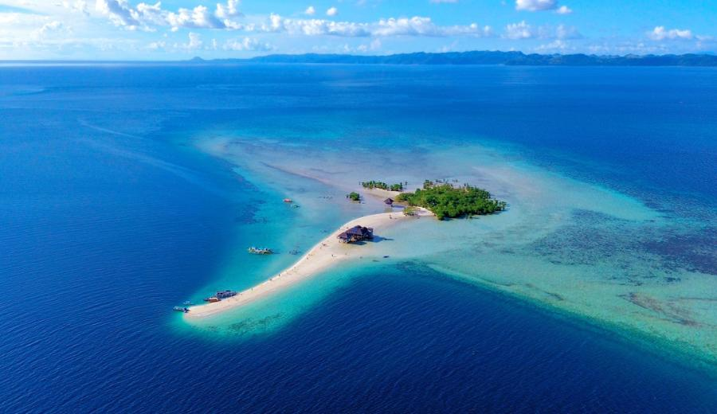
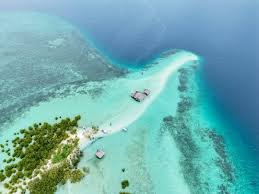

Buntod Sandbar is one of the most popular attractions in Masbate, known for its long stretch of fine white sand. It is surrounded by clear, shallow waters, making it perfect for swimming and relaxing. Visitors also love taking photos here because of its peaceful and scenic island view.

The Marine Sanctuary in Buntod is a protected area that helps preserve marine life and coral reefs. It is a great place for snorkeling, where visitors can see colorful fish and underwater ecosystems. The sanctuary also features a mangrove forest with a wooden boardwalk, offering a relaxing nature walk.